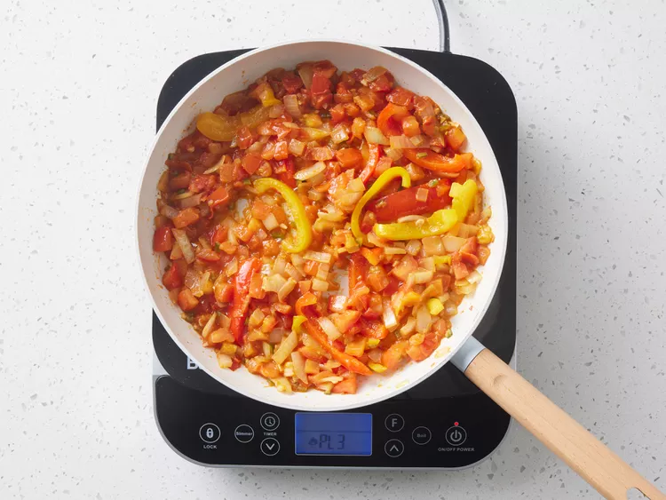

Шакшука

Шакшука (або шакшоука) — це традиційна туніська страва, що складається з яєць, зварених у пряному томатному соусі з цибулею, болгарським перцем і часником. Зазвичай її їдять на сніданок, але, на мою думку, вона чудово підходить і для обіду чи вечері — особливо якщо подати з великою кількістю хліба, щоб вимокати соус.
Інгредієнти
Оригінальний рецепт розрахований на 4 порції
- 3 столові ложки оливкової олії
- 1 ⅓ склянки нарізаної цибулі
- 1 склянка тонко нарізаного болгарського перцю
- 2 зубчики часнику, подрібнені (або за смаком)
- 2 ½ склянки нарізаних помідорів
- 1 гострий перець чилі, очищений від насіння і дрібно нарізаний (або за смаком)
- 1 чайна ложка меленого кмину
- 1 чайна ложка паприки
- 1 чайна ложка солі
- 4 великі яйця
Приготування
- Підготуй усі інгредієнти.

- Розігрій оливкову олію на сковороді на середньому вогні. Додай цибулю, болгарський перець і часник; готуй, помішуючи, поки овочі не стануть м’якими, а цибуля — прозорою (приблизно 5 хвилин).

- Тим часом змішай у мисці помідори, перець чилі, кмин, паприку та сіль.

- Додай томатну суміш до овочів на сковороді. Готуй на невеликому вогні без кришки, поки рідина з помідорів не випарується (приблизно 10 хвилин).

- Зроби 4 заглиблення у томатній масі та акуратно розбий у них яйця. Накрий сковороду кришкою і готуй, поки яйця не схопляться, але залишаться ніжними (приблизно 5 хвилин).

- Подавай і насолоджуйся!
Харчова цінність
На 1 порцію
- 209 Ккал
- 15г Жирів
- 13г Вуглеводів
- 8г Білків
На головну